전자기사 (2008-03-02 기출문제)
1과목: 전기자기학
1. 그림에서 축전기를 ±Q로 대전한 후 스위치 k를 닫고 도선에 전류 I를 흘리는 순간의 축전기 두 판사이의 변위전류는?
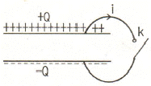
- +Q판에서 -Q판쪽으로 흐른다.
- -Q판에서 +Q판쪽으로 흐른다.
- 왼쪽에서 오른쪽으로 흐른다.
- 오른쪽에서 왼쪽으로 흐른다.
(정답률: 알수없음)

2. 변위전류에 의하여 전자파가 발생되었을 때 전자파의 위상은?
- 변위전류보다 90° 빠르다.
- 변위전류보다 90° 늦다.
- 변위전류보다 30° 빠르다.
- 변위전류보다 30° 늦다.
(정답률: 알수없음)
3. 합성수지(εS = 4) 중에서의 전자파의 속도는 몇 [m/s]인가? (단, μS = 1 이다.)
- 1.5×107
- 1.5×108
- 3×107
- 3×108
(정답률: 알수없음)
4. 진공내에서 전위함수가 V = x2 + y2과 같이 주어질 때, 점 (2,2,0)[m]에서 체적전하밀도 ρ는 몇 [C/m3 ]인가? (단, ε0는 자유공간의 유전율이다.)
- -4 ε0
- -2 ε0
- 4 ε0
- 2 ε0
(정답률: 알수없음)
5. 다음 사항 중 옳지 않은 것은?
- 전계가 0 이 아닌 곳에서는 전력선과 등전위면은 직교한다.
- 정전계는 정전에너지가 최소인 분포이다.
- 정전대전 상태에서는 전하는 도체표면에만 분포한다.
- 정전계 중에서 전계의 선적분은 적분경로에 따라 다르다.
(정답률: 알수없음)
6. 자기인덕턴스 L[H]인 코일에 I[A]의 전류를 흘렸을 때 코일에 축적되는 에너지 W[J]와 전류 I[A] 사이의 관계를 그래프로 표시하면 어떤 모양이 되는가?
- 직선
- 원
- 포물선
- 타원
(정답률: 알수없음)
7. 평행판 공기콘센서의 양극판에 +ρ [c/m2], -ρ [c/m2]의 전하가 충전되어 있을 때, 이 두 전극사이에 유전율 e[F/m]인 유전체를 삽입한 경우의 전계의 세기는 몇 [V/m]인가? (단, 유전체의 분극전하밀도를 +ρp [c/m2], -ρp [c/m2] 라 한다.)
- ρ+ρp/ε0
- ρ-ρp/ε0
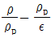
- ρp/ε0
(정답률: 알수없음)
8. 유전체 내의 전계의 세기 와 분극의 세기 와의 관계를 나타내는 식은? (단, ε0는 자유공간의 유전율이며, εs 는 상대유전상수이다.)
- P = ε0(εs-1)E
- P = ε0εsE
- P = εs(ε0-1)E
- P = ε(εs-1)E
(정답률: 알수없음)
9. 그림과 같이 비투자율 μs = 1000, 단면적 10[cm2], 길이 2[m]인 환상철심이 있을 때, 이 철심에 코일을 2000회 감아 0.5[A]의 전류를 흘릴 때의 철심 내 자속은 몇 [Wb]인가?
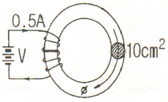
- 1.26×10-3
- 1.26×10-4
- 6.28×10-3
- 6.28×10-4
(정답률: 알수없음)
10. 자기모멘트 M[Wbㆍm]인 막대자석이 평등자계 H[A/m]내에 자계의 방향과 θ 의 각도로 놓여 있을 때 이것에 작용하는 회전력 T[Nㆍm/rad]는?
- MH cos θ
- MH sin θ
- MH tan θ
- MH cot θ
(정답률: 알수없음)
11. 유전율 ε1 [F/m], ε2 [F/m]인 두 유전체가 나란히 접하고 있고, 이 경계면에 나란히 유전체 ε1 [F/m] 내에 거리 r [m]인 위치에 선전하 밀도 λ [c/m]인 선상 전하가 있을 때, 이 선전하와 유전체 ε2간의 단위길이당의 작용력은 몇 [N/m]인가?
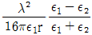
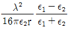
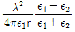
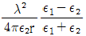
(정답률: 알수없음)
12. 비투자율 350인 환상철심 중의 평균자계의 세기가 280[A/m]일 때 자화의 세기는 약 몇 [Wb/m2]인가?
- 0.12 [Wb/m2]
- 0.15 [Wb/m2]
- 0.18 [Wb/m2]
- 0.21 [Wb/m2]
(정답률: 알수없음)
13. 공기 중에 놓여진 직경 2m의 구도체에 줄 수 있는 최대 전하는 약 몇 [C]인가? (단, 공기의 절연내력은 3000 kV/m 이다.)
- 5.3×10-4
- 3.33×10-4
- 2.65×10-4
- 1.67×10-4
(정답률: 알수없음)
14. 임의의 단면을 가진 2개의 원주상의 무한히 긴 평행도체가 있다. 지금 도체의 도전율을 무한대라고 하면 C, L, ε 및 μ 사이의 관계는? (단, C는 두 도체간의 단위 길이당 정전용량, L은 두 도체를 한 개의 왕복회로로 한 경우의 단위 길이당 자기인덕턴스, ε은 두 도체사이에 있는 매질의 유전율, μ는 두 도체사이에 있는 매질의 투자율이다.)
- C/ε = L/μ
- 1/LC = εㆍμ
- LC = εㆍμ
- Cㆍε = Lㆍμ
(정답률: 알수없음)
15. 옴의 법칙(Ohm's law)을 미분형태로 표시하면? (단, i 는 전류밀도이고, ρ 은 저항율, E 는 전계이다.)
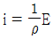
- i = ρE
- i = div E
- i = ∇E
(정답률: 알수없음)
16. 정전계에서 도체의 성질을 설명한 것 중 옳지 않은 것은?
- 전하는 도체의 표면에서만 존재한다.
- 대전된 도체는 등전위면이다.
- 도체 내부의 전계는 0 이다.
- 도체 표면상에서 전계의 방향은 모든 점에서 표면의 접선 방향이다.
(정답률: 알수없음)
17. 다음 ( ㉠ ), ( ㉡ )에 알맞은 것은?
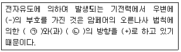
- ㉠ 전압 ㉡ 전류
- ㉠ 전압 ㉡ 자속
- ㉠ 전류 ㉡ 자속
- ㉠ 자속 ㉡ 인덕턴스
(정답률: 알수없음)
18. 자기모멘트 9.8×10-5[Wbㆍm]의 막대자석을 지구자계의 수평성분 125[AT/m]의 곳에서 지자기 자오면으로부터 90° 회전시키는데 필요한 일은 약 몇 [J]인가?
- 1.23×10-3
- 1.03×10-5
- 9.23×10-3
- 9.03×10-5
(정답률: 알수없음)
19. 강자성체의 히스테리시스 루프의 면적은?
- 강자성체의 단위 체적당의 필요한 에너지이다.
- 강자성체의 단위 면적당의 필요한 에너지이다.
- 강자성체의 단위 길이당의 필요한 에너지이다.
- 강자성체의 전체 체적의 필요한 에너지이다.
(정답률: 알수없음)
20. 극판의 면적이 4[cm2], 정전용량이 1[pF]인 종이콘덴서를 만들려고 한다. 비유전율 2.5, 두께 0.01[mm]의 종이를 사용하면 종이는 약 몇 장을 겹쳐야 되겠는가?
- 87장
- 100장
- 250장
- 886장
(정답률: 알수없음)
2과목: 회로이론
21. 그림과 같은 회로에서 저항 10[Ω]의 지로를 흐르는 전류는?
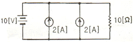
- 1[A]
- 2[A]
- 4[A]
- 5[A]
(정답률: 알수없음)
22. 다음 그림에서 스위치 S를 닫은 후의 전류 i(t)는? (단, t = 0 에서 i = 0 이다.)
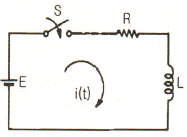
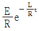
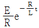
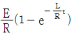
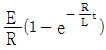
(정답률: 알수없음)
23. 콘덴서 C에 단위 임펄스의 전류원을 접속하여 동작시키면 콘덴서의 전압 VC(t)는?
- VC(t) = 1/C
- VC(t) = C
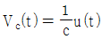
- VC(t) = Cu(t)
(정답률: 알수없음)
24. 다음 회로의 병렬공진 주파수는?
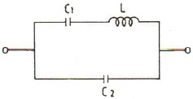
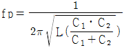
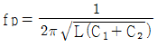
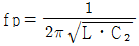
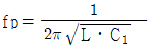
(정답률: 알수없음)
25. 역률 80[%], 부하의 유효전력이 80[kW]이면 무효전력은?
- 20 [kVar]
- 40 [kVar]
- 60 [kVar]
- 80 [kVar]
(정답률: 알수없음)
26. 그림과 같은 주기성으 갖는 구형파 교류 전류의 실효치는?
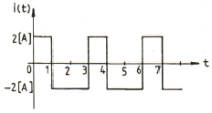
- 2[A]
- 4[A]
- 2/3[A]
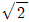
(정답률: 알수없음)
27. 다음 회로가 주파수에 무관한 정저항 회로가 되기 위한 R의 값은?
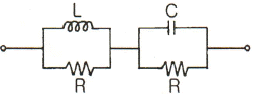
- R = L/C
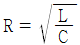
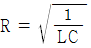
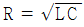
(정답률: 알수없음)
28. 라플라스 변환식 F(S) = 1/S2+2S+5 의 역 변환은?
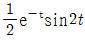
- e-tsin2t
- e-2tsin7t
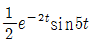
(정답률: 알수없음)
29. f(t) = sint cost 를 라플라스 변환하면?
- 1/S2+2
- 1/S2+4
- 1/(S+2)2
- 1/(S+4)2
(정답률: 알수없음)
30. 다음의 회로망 방정식에 대하여 S 평면에 존재하는 극은?
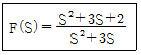
- 3, 0
- -3, 0
- 1, -3
- -1, -3
(정답률: 알수없음)
31. 그림과 같은 저항 회로에서 합성 저항이 Rab = 12[Ω]일 때 병렬 저항 Rx의 값은 몇 [Ω]인가?
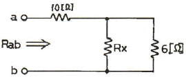
- 3
- 4
- 5
- 6
(정답률: 알수없음)
32. 그림의 T형 4단자 회로에 대한 전송 파라미터 D는?
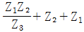
- 1+Z1/Z3
- 1+Z2/Z3
- 1/Z3
(정답률: 알수없음)
33. 단자 외부에 연결되는 임피던스를 예상해서 도입되는 파라미터는?
- 반복 파라미터
- 영상 파라미터
- H 파라미터
- 임피던스 파라미터
(정답률: 알수없음)
34. 다음 그림과 같은 회로에서 데브난 등가 저항은?
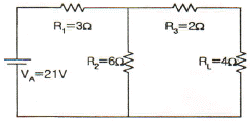
- 2 [Ω]
- 4 [Ω]
- 6 [Ω]
- 8 [Ω]
(정답률: 알수없음)
35. 이상 변압기의 조건 중 옳지 않은 것은?
- 코일에 관계되는 손실이 0 이다.
- 두 코일간의 결합계수가 1 이다.
- 동손, 철손이 약간 있어야한다.
- 각 코일의 인덕턴스가 ∞ 이다.
(정답률: 알수없음)
36. Y 결선한 이상적인 3상 평형전원에 관한 것으로 옳은 것은?
- 선간 전압의 크기 = 상 전압의 크기
- 선간 전압의 크기 = 상 전압의 크기×

- 선간 전류의 크기 = 상 전류의 크기×
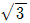
- 상 전압의 크기 = 선간 전압의 크기×

(정답률: 알수없음)
37. 리액턴스 함수가Z(s) = 3s/s2+9 로 표시되는 리액턴스 2단자망은?
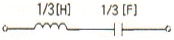
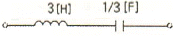
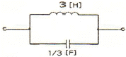
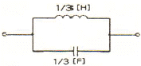
(정답률: 알수없음)
38. 차단 주파수에 대한 설명으로 옳지 않은 것은?
- 출력 전압이 최대값의
 이 되는 주파수이다.
이 되는 주파수이다. - 전력이 최대값의 1/2이 되는 주파수이다.
- 전압과 전류의 위상차가 60°가 되는 주파수이다.
- 출력 전류가 최대값의
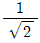
이 되는 주파수이다.
(정답률: 알수없음)
39. R-L 직렬회로의 임피던스가 11.18[Ω]이고, L=10[mH]이다. 정현파 전압을 인가해서 전압이 전류보다 63.4° 만큼 위상이 빠르게 될 때의 R[Ω]과 ω [rad/sec]는 약 얼마인가? (단, tan 63.4° ≒ 2)
- R=5, ω=1000
- R=50, ω=1000
- R=50, ω=100
- R=5, ω=100
(정답률: 알수없음)
40. 다음은 무엇에 대한 설명인가?
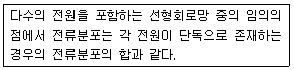
- 중첩의 원리
- 밀만의 정리
- 테브난의 정리
- 노튼의 정리
(정답률: 알수없음)
3과목: 전자회로
41. 피어스 B-C glh로에 해당하는 LC 발진기는?
- 콜피츠형
- 하틀리형
- 이미터 동조형
- 베이스 동조형
(정답률: 알수없음)
42. duty cycle 이 0.1이고, 주기가 20[μs]인 펄스의 폭은 얼마인가?
- 0.1 [μs]
- 0.2 [μs]
- 1 [μs]
- 2 [μs]
(정답률: 알수없음)
43. 다음 차동증폭기 회로의 출력 VO로 가장 적합한 것은? (단, 연산증폭기의 특성은 이상적이다.)
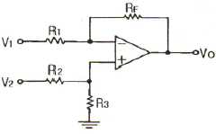
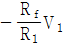
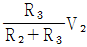
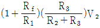
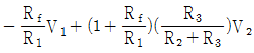
(정답률: 알수없음)
44. 그림과 같은 연산 증폭기의 출력 전압(Vo)으로 가장 적합한 것은?
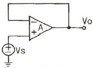
- Vo = 0
- Vo = AㆍVs
- Vo = Vs
- Vo = 1
(정답률: 알수없음)
45. RC 결합 증폭기에서 구형파 입력 전압에 대한 그림과 같은 출력이 나온다면 이 증폭기의 주파수 특성에 대한 설명으로 가장 적합한 것은?
- 저역특성이 좋지 않다.
- 중역특성이 좋지 않다.
- 대역폭이 너무 넓다.
- 고역특성이 좋지 않다.
(정답률: 알수없음)
46. 개방루프 전압이득 Av = 2000±150인 증폭기에 부궤환을 걸어서 전압이득이 ±0.2% 이내로 안정시키려면 궤환 계수 β를 약 얼마로 하면 되는가?
- 0.75
- 0.037
- 0.0183
- 0.0123
(정답률: 알수없음)
47. α가 0.99, 차단주파수가 30[MHz]인 베이스접지 증폭회로를 이미터접지로 하였을 경우 차단주파수는 약 몇 [MHz]인가?
- 0.1 [MHz]
- 0.3 [MHz]
- 1.2 [MHz]
- 3.0 [MHz]
(정답률: 알수없음)
48. 트랜지스터의 컬렉터 누설전류가 주위온도 변화로 2 [μA]에서 100[μA]로 증가되었을 때 컬렉터 전류의 변화가 1[mA]라 하면 안정도 계수는 약 얼마인가? (단, VBE와 β는 일정하다.)
- 3.5
- 6.3
- 10.2
- 15.1
(정답률: 알수없음)
49. 다음 회로의 명칭으로 가장 적합한 것은?
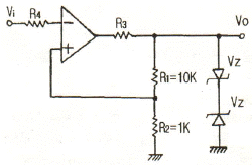
- Schmitt 트리거 회로
- 톱니파 발생 회로
- monostable 회로
- Astable 회로
(정답률: 알수없음)
50. A급 증폭기에 대한 설명으로 옳지 않은 것은?
- 충실도가 좋다.
- 효율은 50% 이하이다.
- 차단(cut off) 영역 부근에서 동작한다.
- 평균 전력손실이 B급이나 C급에 비해 크다.
(정답률: 알수없음)
51. 다음 회로는 BJT의 소신호 등가 모델이다. 여기서 rO와 가장 관련이 갚은 것은?
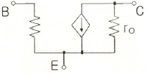
- 1
- 2
- 3
- 4
(정답률: 알수없음)
52. 다음 중 B급 푸시풀 증폭기의 특징이 아닌 것은?
- 전력 효율이 높다.
- 큰 출력을 얻을 수 있다.
- 차단 상태 근처에 바이어스 되어있다.
- 입력 신호가 없을 때 전력 손실이 매우 크다.
(정답률: 알수없음)
53. 트랜지스터 고주파 특성의 α 차단주파수(fα)에 대한 설명으로 가장 적합한 것은?
- 컬렉터 용량에만 비례한다.
- 베이스 폭과 컬렙터 용량에 각각 반비례한다.
- 컬렉터 인가 전압에 비례한다.
- 베이스 폭의 자승에 반비례하고, 확산계수에 비례한다.
(정답률: 알수없음)
54. 어떤 증폭기의 하측 3dB 주파수가 0.75[MHz]이고, 상측 3dB 주파수가 5[MHz]일 때 이 증폭기의 대역폭은?
- 4.25[MHz]
- 5[MHz]
- 7.75[MHz]
- 10[MHz]
(정답률: 알수없음)
55. 부궤환에 의한 입력임피던스 변화를 잘못 설명한 것은?
- 전압 직렬 궤환시 입력임피던스는 감소한다.
- 전류 직렬 궤환시 입력임피던스는 증가한다.
- 전압 병렬 궤환시 입력임피던스는 감소한다.
- 전류 병렬 궤환시 입력임피던스는 감소한다.
(정답률: 알수없음)
56. 아래 회로에서 제너다이오드가 정상적으로 동작하기 위한 RL의 최소값은 몇 [kΩ]인가?
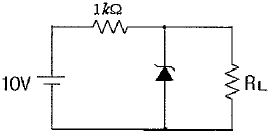
- 1
- 2
- 3
- 4
(정답률: 알수없음)
57. 증폭기에서 고조파 성분을 많이 포함하고 있어 주파수 체배기에 많이 사용되며 효율이 가장 좋은 것은?
- A급
- AB급
- B급
- C급
(정답률: 알수없음)
58. 컬렉터 접지형 증폭기의 특징이 아닌 것은?
- 전류증폭도는 수십에서 수백 정도이다.
- 전압증폭도는 약 1 이다.
- 입ㆍ출력 전압의 위상은 동위상이다.
- 입력임피던스는 낮고, 출력임피던스는 높다.
(정답률: 알수없음)
59. 병렬 공진 회로에서 공진 주파수가 10[kHz]이고, Q가 50이라면 이 회로의 대역폭은?
- 100 [Hz]
- 150 [Hz]
- 200 [Hz]
- 250 [Hz]
(정답률: 알수없음)
60. 다음 중 수정발진자에 대한 설명으로 적합하지 않은 것은?
- 수정편은 압전기현상을 가지고 있다.
- 수정편은 Q가 5000 정도로 매우 높다.
- 발진주파수는 수정편의 두께와 무관하다.
- 수정편은 절단하는 방법에 따라 전기적 온도특성이 달라진다.
(정답률: 알수없음)
4과목: 물리전자공학
61. 2500[V]의 전압으로 가속된 전자의 속도는 약 얼마인가?
- 2.97×107 [m/s]
- 9.07×107 [m/s]
- 2.97×106 [m/s]
- 9.07×106 [m/s]
(정답률: 알수없음)
62. MOSFET의 전류-전압특성 곡선이 다음 그림과 같은 기울기를 갖는 이유는?
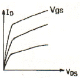
- 트랜지스터가 선형영역에서 동작하기 때문이다.
- 트랜지스터가 항복영역에서 동작하기 때문이다.
- 채널길이 변조효과 때문이다.
- 채널폭 변조효과 때문이다.
(정답률: 알수없음)
63. LASER가 MASER와 근본적으로 다른 점은?
- 유도 방출에 의한다.
- 펌핑(pumping)에 의한다.
- 광의 증폭 및 발진에 이용된다.
- 반전 분포(population inversion)에 의한다.
(정답률: 알수없음)
64. 0[°K]에서 금속 내 자유전자 평균 운동 에너지는? (단, EF는 페르미 준위이다.)
- 0
- EF
- 2/3EF
- 3/8EF
(정답률: 알수없음)
65. 진성반도체에 있어서 전도대으 전자밀도 n은 에너지gap Eg의 크기에 따라 변한다. 다음 중 옳은 것은?
- n은 Eg의 증가에 지수 함수적으로 증가한다.
- n은 Eg의 증가에 지수 함수적으로 감소한다.
- n은 Eg에 반비례한다.
- n은 Eg에 비례한다.
(정답률: 알수없음)
66. 전자가 외부의 힘(열, 빛, 전장)을 받아 핵의 구속력으로부터 벗어나 결정 내를 자유로이 이동할 수 있는 자유전자의 상태로 존재하는 에너지대는?
- 충만대(filled band)
- 가전자대(valence band)
- 금지대(forbidden band)
- 전도대(conduction band)
(정답률: 알수없음)
67. Pauli의 배타율 원리에 대한 설명 중 옳지 않은 것은?
- 원자내의 전자 배열을 지배하는 원리이다.
- 원자내에서 두 개의 전자가 동일한 양자 상태에 있을 수 있다.
- 하나의 양자 궤도에는 spin이 다른 두 개의 전자가 존재할 수 있다.
- 원자내에서 하나의 양자 상태에는 단지 1개의 전자만 존재할 수 있다.
(정답률: 알수없음)
68. n채널 J-FET와 그 특성이 비슷한 진공관은?
- 2극관
- 3극관
- 4극관
- 5극관
(정답률: 알수없음)
69. 반도체의 전자와 정공에 대한 설명 중 옳지 않은 것은?
- 자유전자는 정공보다 이동도가 더 크다.
- 전자의 흐름과 정공의 흐름은 반대이다.
- 전자와 정공이 결합하면 에너지를 흡수한다.
- 전자가 공유결합을 이탈하면 정공이 생성된다.
(정답률: 알수없음)
70. 펀치스루(punch through) 현상에 대한 설명으로 가장 옳지 않은 것은?
- 이미터, 베이스, 컬렉터의 단락 상태이다.
- 펀치스루 전압은 베이스 영역 폭의 제곱에 비례한다.
- 컬렉터 역 바이어스의 증가에 의해 발생하는 현상이다.
- 펀치스루 전압은 베이스 내의 불순물 농도에 반비례한다.
(정답률: 알수없음)
71. MOSFET에 대한 설명으로 옳지 않은 것은?
- 입력 임피던스가 크다.
- 저잡음 특성을 쉽게 얻을 수 있다.
- 제작이 간편하고, IC화하기에 적합하다.
- 사용주파수 범위가 쌍극성 트랜지스터보다 높다.
(정답률: 알수없음)
72. Si 단결정 반도체에서 N형 불순물로 사용될수 있는 것은?
- 인듐(In)
- 비소(As)
- 붕소(B)
- 알루미늄(Al)
(정답률: 알수없음)
73. Ge의 진성 캐리어 밀도는 상온에서 Si보다 높다. 그 이유에 대한 설명으로 가장 옳은 것은?
- Ge의 에너지 갭이 Si의 에너지 갭보다 좁기 때문에
- Si의 에너지 갭이 Ge의 에너지 갭보다 좁기 때문에
- Ge의 캐리어 이동도가 Si보다 크기 때문에
- Ge의 캐리어 이동도가 Si보다 작기 때문에
(정답률: 알수없음)
74. Fermi-Dirac 분포함수 f(E)에 대한 설명으로 옳지 않은 것은? (단, Ef는 페르미 준위이다.)
- T = 0[°K]일 때 E＞Ef 이면 f(E)=0 이다.
- T = 0[°K]일 때 E＜Ef 이면 f(E)=1 이다.
- 절대온도에 따라 전자가 채워질 확률은 일정하다.
- T = 0[°K]에서는 Ef보다 낮은 에너지 준위는 전부 전자로 채워있으며, Ef 이상의 준위는 전부 비어 있다.
(정답률: 알수없음)
75. 다음 중 물질의 구성과 관계없는 요소는?
- 광자
- 중성자
- 양자
- 전자
(정답률: 알수없음)
76. PN 접합에 순방향 바이어스를 공급할 때의 특징이 아닌 것은?
- 전장이 약해진다.
- 전위장벽이 높아진다.
- 공간전하 영역의 폭이 좁아진다.
- 다수 캐리어에 의한 확산 전류는 증대된다.
(정답률: 알수없음)
77. 운동 전자가 가지는 파장이 2.7×10-10 [m]인 경우 그 전자의 속도는? (단, 플랭크 상수 h=6.6×10-34[Jㆍsec], 전자의 질량 m=9.1×10-31 [kg]이다.)
- 2.69×104 [m/s]
- 2.69×105 [m/s]
- 2.69×106 [m/s]
- 2.69×107 [m/s]
(정답률: 알수없음)
78. 다음 중 광양자가 에너지와 운동량을 갖고 있음을 나타내는 것은?
- 광전 효과(photo electric effect)
- 콤프턴 효과(Compton effect)
- 에디슨 효과(Edison effect)
- 홀 효과 (Hole effect)
(정답률: 알수없음)
79. 다음 중 터널다이오드(Tunnel Diode)의 I-V 특성을 나타낸 것은?
(정답률: 알수없음)
80. 광전자 방출 현상에 있어서 방출된 전자의 에너지에 대한 설명으로 옳은 것은?
- 광의 세기에 비례한다.
- 광의 속도에 비례한다.
- 광의 주파수에 비례한다.
- 광의 주파수에 반비례한다.
(정답률: 알수없음)
5과목: 전자계산기일반
81. 서브루틴에 대한 설명 중 옳은 것은?
- 서브루틴을 부른 주프로그램은 수행이 중단된다.
- 서브루틴의 수행이 끝나면 프로그램의 수행을 종료한다.
- 서브루틴의 수행이 끝나면 주프로그램은 처음부터 다시 수행한다.
- 서브루틴의 수행이 끝나명 주 프로그램의 수행도 종료한다.
(정답률: 알수없음)
82. 패리티체크를 통한 오류 검출 방법에 대한 설명 중 옳지 않은 것은?
- 홀수 패리티체크는 비트 값이 1인 개수가 홀수가 되도록 한다.
- 짝수 패리티체크는 비트 값이 1인 개수가 짝수가 되도록 하는데 이때 체크 패리티의 부호 값을 포함해서 짝수가 되어야 한다.
- 두 비트가 동시에 에러를 발생해도 검출이 가능하다.
- 정보가 1110일 때 홀수 패리티체크에서 패리티발생기는 0 의 값을 발생한다.
(정답률: 알수없음)
83. 2의 보수로 표현되는 수가 A, B 레지스터에 저장되어 있다. A←A-B 연산을 수행한 후의 A 레지스터는?
- 00000012
- FFFFFF12
- 000000B0
- FFFFFFB0
(정답률: 알수없음)
84. 다음은 무슨 연산 동작을 나타내는 것인가? (단, A, B는 입력값을 의미하고, R1, R2, R3, R4는 레지스터를 의미한다.)
- Addition
- Subtraction
- Multiplication
- Division
(정답률: 알수없음)
85. 직렬 데이터 전송(Serial Data Transfer) 방식 중 양쪽 방향으로 동시에 데이터를 전송할 수 있는 방식은?
- 단방향 방식(Simplex)
- 반이중 방식(Half-Duplex)
- 전이중 방식(Full-Duplex)
- 해당하는 방식이 없다.
(정답률: 알수없음)
86. java 언어에서 같은 클래스 내에서만 접근 가능하도록 하고자 할 때 사용하는 접근 제한자(한정자)는?
- public
- private
- protected
- final
(정답률: 알수없음)
87. 다음 중 레지스터 사이의 자료 전송 형태와 관계없는 것은?
- 직렬전송
- 간접전송
- 버스전송
- 병렬전송
(정답률: 알수없음)
88. 다음 중 CPU의 메이저 상태 변환 순서가 틀린 것은?
- fetch-interrupt-execute-fetch
- fetch-execute-fetch
- fetch-indirect-execute-fetch
- fetch-execute-interrupt-fetch
(정답률: 알수없음)
89. 마이크로컴퓨터에서 isolated I/O 방식과 비교하여 memory-mapped I/O 방식의 특징으로 옳은 것은?
- 하드웨어가 복잡하다.
- 기억장치명령과 입ㆍ출력 명령을 구별하여 사용한다.
- 기억장치의 주소 공간이 줄어든다.
- 입ㆍ출력 장치들의 주소 공간이 기억장치 주소 공간과 별도로 할당된다.
(정답률: 알수없음)
90. 요구분석, 시스템설계, 시스템구현 등의 시스템 개발 과정에서 개발자간의 의사소통을 원활하게 이루어지게 하기 위하여 표준화한 모델링 언어는?
- EAL
- C#
- XML
- UML
(정답률: 알수없음)
91. 부호화된 2의 보수에서 8비트로 표현할 수 있는 수의 표현 범위는?
- -128 ~ 128
- -127 ~ 128
- -128 ~ 127
- -127 ~ 127
(정답률: 알수없음)
92. 여러 개의 축전기가 쌍으로 상호 연결되어 있는 회로로 구성되어 있으며, 디지털 스틸 카메라, 광학 스캐너, 디지털 비디오 카메라와 같은 장치의 주요 부품으로 사용되는 것은?
- CCD
- ROM
- PLA
- EPROM
(정답률: 알수없음)
93. 다음 중 순서도의 유형이 아닌 것은?
- 직선형 순서도
- 분기형 순서도
- 반복형 순서도
- 교차형 순서도
(정답률: 알수없음)
94. 다음은 어떤 명령어의 실행 주기인가?
- 덧셈(ADD)
- 뺄셈(SUB)
- 로드(LDA)
- 스토어(STA)
(정답률: 알수없음)
95. 다음 중 누산기에 대한 설명으로 옳은 것은?
- 연산명령이 주어지면 연산준비를 하는 레지스터이다.
- 산술연산 또는 논리연산의 결과를 일시적으로 기억하는 레지스터이다.
- 연산명령의 순서를 기억하는 레지스터이다.
- 연산부호를 처리하는 레지스터이다.
(정답률: 알수없음)
96. 다음 중에서 UNIX의 쉘(shell)에 대하여 가장 적절하게 설명한 것은?
- 명령어를 해석한다.
- UNIX 커널의 일부이다.
- 문서처리 기능을 갖는다.
- 디렉터리 관리 기능을 갖는다.
(정답률: 알수없음)
97. 다음 중 자료 구조를 표현하는데 있어 나머지 3가지 표현방식의 단점을 보완한 선형 리스트는?
- queue
- stack
- deque
- linked list
(정답률: 알수없음)
98. 다음의 소자 중에서 전원과 관련된 신호는 제외하고 연결선의 수가 가장 많은 것은?
- 1K×4bit DRAM
- 8K×4bit SRAM
- 4K×4bit DRAM
- 64K×4bit SRAM
(정답률: 알수없음)
99. 4-단계 파이프라인구조의 컴퓨터에서 클럭주기가 1μs 일 때, 10개의 명령어를 실행하는데 걸리는 시간은?
- 10 μs
- 11 μs
- 12 μs
- 13 μs
(정답률: 알수없음)
100. 어떤 특정한 비트 또는 문자를 삭제할 때 사용하는 연산은?
- AND
- OR
- X-OR
- NOR
(정답률: 알수없음)